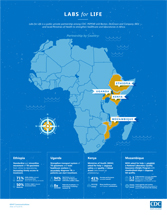

ShareCompartir
ShareCompartir
International AIDS Society (IAS) Conference

Leaders from CDC’s Division of Global HIV & TB are participating in the 21st annual International AIDS Conference being held in Durban, South Africa from July 18-22, 2016.
This conference serves as the leading opportunity for key players in the field of global HIV to come together, assess progress, address challenges, and pave a path forward to end HIV around the world. The conference will include abstract-driven presentations, plenary sessions, and the unveiling of groundbreaking scientific research. DGHT and other CDC leaders will be presenting data in multiple plenary presentations that showcase the latest work from the division. Key highlights include HIV and TB presentations by Division Director, Dr. Shannon Hader, presentations on the Division’s efforts to achieve 90-90-90 goals and DGHT-led discussions on aligning efforts to achieve both HIV and TB control.
In the days leading up to IAC, from July 16-17th, conference leaders have also organized TB 2016, a two-day conference dedicated exclusively to discussing innovative research, global challenges, and possible solutions to increase awareness of global TB. Concurrently, the PEPFAR Annual Meeting will also be taking place in Durban from July 16-17.


|
a graphic of the global HIV epidemic and CDC’s fight against global HIV |
|
|
a graphic illustrating the impact of global TB and how CDC is fighting global TB |
|
|
follow us on Facebook for conference updates that you can share with your networks |
|
|
follow us on Twitter for conference updates that you can share with your networks |

|
US Government booth |
DGHT colleagues will be at the USG booth participating in “Ask the Expert” – answering questions based on their area of expertise. |
|
a day by day schedule of events for IAC |
|
|
a day by day schedule of events for TB 2016 |
|
|
click here to view featured IAC sessions live |
Labs for Life Infographic:

Get email updates
To receive email updates about this page, enter your email address:
Contact Us:
- Centers for Disease Control and Prevention
1600 Clifton Rd
Atlanta, GA 30333 - 800-CDC-INFO
(800-232-4636)
TTY: (888) 232-6348
24 Hours/Every Day - Contact CDC-INFO